How to use this lesson
Section 0 · How this course works (replaces "From last time" for the first lesson of the course)
This course is built on three recurring artifacts:
- The World Bible — three case-study orgs (above). Every business scenario lives in one of them. You'll get to know Priya, Maya, and Ronnie like coworkers.
- Sherpa — one codebase that evolves across the course. We start it as a ReAct loop in Module 4 and end with a production multi-agent system in Module 9. Each lab adds a capability to Sherpa, replacing what came before. You experience the forces that drive each architectural choice.
- The concept DAG — the prerequisite graph for every topic. Shown at the start of every module with your current lesson highlighted.
Each lesson follows a 10-section template: §0 from-last-time → §1 business scenario → §2 bridge → §3 mind map → §4 elaboration → §5 problem statement → §6 solution walkthrough → §7 math → §8 technical deep-dive → §9 what this unlocks. Sections are consistent so you build muscle memory for where to find what.
If a math derivation looks heavy, you can skip §7 on first pass and come back. Nothing else depends on it being read in order.
Business Scenario
HSBC Mid-Office, Tuesday 11:14 PM.
Aisha Khan, senior reconciliation analyst, is 23 tickets into her overnight batch. Ticket #BR-208441: cross-border USD/SGD settlement, counterparty Sigma Capital, trade reference TR-771-994, $1.20M notional, broke at the amount field — the GL shows $1.196M, SWIFT shows $1.200M.
Aisha doesn't need to investigate. She recognizes the pattern instantly. Sigma Capital deducts a $4,000 prime brokerage fee at settlement that isn't reflected in the static data. She's seen this same break shape 11 times in the last six months. She tags it fee_deduction · sigma_capital · known_pattern, attaches the standard fee memo, and routes for sign-off. Elapsed time: 47 seconds.
But there are 1,377 more breaks in tonight's queue. The average break takes Aisha 14 minutes. The eight analysts on her team will collectively spend ~50 hours tonight working through them. At $42/break, that's $58k of cost in a single overnight.
Meanwhile, Priya Iyer — Aisha's boss — is sitting in a vendor evaluation meeting tomorrow morning. Three vendors are pitching automation:
- Vendor A: BotForce. "We'll build a robotic process automation (RPA) workflow. When a break arrives, our bot opens the GL, opens SWIFT, copies fields into a spreadsheet, runs your reconciliation macro, and posts the result. £180k/year licensing."
- Vendor B: PredictML. "We'll train a classifier on three years of historical breaks. Features: counterparty, amount delta, currency pair, time-of-day. Output: predicted break category with confidence. £240k/year."
- Vendor C: Lumen Agents. "We'll deploy an AI agent that investigates breaks the way Aisha does — pulls the trade, checks the counterparty, queries the GL, classifies the cause. £320k/year + LLM costs."
Priya has 24 hours to pick. She forwards the proposals to Daniel Cho (model risk) with one question: "What's the actual difference? Are these the same product with different price tags?"
Bridge to Topic
Daniel's answer will hinge on a definition most teams haven't bothered to make precise: what is an agent, and what isn't?
BotForce is a script. PredictML is a classifier (a function from features to labels). Lumen is — possibly — an agent. These three things differ not in capability but in who decides what to do next. Get the definition right and the vendor choice writes itself.
Mind Map

Mermaid source
mindmap
root((Agent))
Definitions
Russell-Norvig 1995
Modern LLM-era
Why agent was useful word
The Agency Dial
Dial 0 script
Dial 1 LLM as function
Dial 2 LLM picks step
Dial 3 LLM owns loop
Dial 4 LLM owns goal
Four Properties
Reactivity
Proactivity
Autonomy
Social ability
What it is NOT
Anthropomorphism
Magic
Always the right choice
Takeaway: "agent" is a continuous measure (the dial), not a binary. The mistake is asking "is it an agent?" instead of "what dial setting do I need?"
Elaboration
4.1 Two definitions, 27 years apart
Russell & Norvig (1995, Artificial Intelligence: A Modern Approach). "An agent is anything that can perceive its environment through sensors and act upon that environment through actuators."
This is the definition you'll see in any AI textbook. It's correct but useless on its own — by this definition, a thermostat is an agent (perceives temperature, acts on heater). So is a Roomba. So is a single for loop with an if statement. The definition was designed to be general; what it gains in generality it loses in operational utility.
Modern (post-2022, LLM-era). An agent is a system in which an LLM dynamically decides which actions to take and when to stop, in pursuit of a goal stated in natural language.
The operative words: dynamically, decides, when to stop, natural language.
- Dynamically — at runtime, not at design time. A workflow's decisions are committed in code; an agent's decisions are committed at inference.
- Decides — including which tool to call, with what arguments, in what order.
- When to stop — the agent owns its own termination. Code doesn't say "run 5 steps then return."
- Natural language — the goal is a sentence, not a structured input.
If your system fails any of these tests, it might be very useful, but it's not (centrally) an agent. That's not a value judgment — workflows are often the right choice. It's a taxonomic statement so you can reason about it precisely.
4.2 The agency dial — the most useful operational view
Instead of asking "is this an agent?", ask "how much of the decision-making does the LLM own?" There's a continuous dial:
| Dial | LLM owns | Code/human owns | Example |
|---|---|---|---|
| 0 | nothing | everything | A SQL query, a cron job, a Makefile |
| 1 | text generation only | when to call, what to do with output | GitHub Copilot autocomplete; ChatGPT one-shot Q&A |
| 2 | step labels / classifications | which tools, in what order, when to stop | A workflow with LLM-driven branches; ChatGPT with a single tool per turn |
| 3 | step labels + tool choice + termination | the goal statement and the available tools | Claude with computer use; Cursor in agent mode; a ReAct loop |
| 4 | everything including the goal | the initial high-level instruction | Devin-style "complete this Jira ticket"; Auto-GPT (in spirit) |
Most production systems sit at dial 2–3. Anything above 3 trades reliability for autonomy at an exponentially worse rate.

Mermaid source
graph LR
D0[Dial 0: Script]:::low --> D1[Dial 1: LLM as function]:::low
D1 --> D2[Dial 2: LLM picks step]:::mid
D2 --> D3[Dial 3: LLM owns loop]:::mid
D3 --> D4[Dial 4: LLM owns goal]:::high
D0 -.predictability.-> P[Predictable - auditable - cheap]:::low
D4 -.predictability.-> U[Unpredictable - surprising - expensive]:::high
classDef low fill:#cfc,stroke:#393
classDef mid fill:#ffd,stroke:#a80
classDef high fill:#fee,stroke:#c33
Takeaway: higher dial = more capability AND more failure-mode surface. Choose the lowest dial that solves your problem.
4.3 The four properties (Wooldridge, 2009 — still useful)
Wooldridge's taxonomy predates LLMs but holds up:
- Reactivity — responds to changes in the environment. LLM agents are strong here (they re-read the world each loop).
- Proactivity — takes initiative to pursue goals. LLM agents are weak here; most are invoked, they don't self-trigger. (This is changing with scheduled/triggered agents.)
- Autonomy — acts without external control. Strong within the loop, weak outside it (a crashed agent doesn't restart itself).
- Social ability — interacts with other agents/humans. Improving rapidly via A2A protocols and structured handoffs.
You don't need all four to call something an agent. But a system with none of them isn't one.
4.4 What it is not
Three common confusions:
- An agent is not a personality. "Friendly customer service bot" is a UX choice, not an architectural one. A chatbot with no tools and no decisions is dial 1.
- An agent is not magic. Every agent failure has a deterministic explanation in its trace. The non-determinism is in the model, not in mysticism.
- An agent is not always the right choice. A workflow is faster, cheaper, more auditable, and easier to debug. If you can express your task as a fixed graph, do.
Problem Statement
Help Daniel Cho prepare his memo for Priya. Classify each of the following six systems on the agency dial (0–4) and decide whether each qualifies as an "agent" by the modern definition. For each, identify the single deciding factor.
- GitHub Copilot autocomplete (in-IDE single-line suggestions).
- ChatGPT with code interpreter and browsing, used for a one-shot question.
- A cron job that calls Claude every morning to summarize yesterday's customer feedback emails and post to Slack.
- Anthropic Claude with computer use, asked to "book me a flight to Tokyo for next Thursday under $1,200."
- Cursor in "agent mode," asked to "add a dark-mode toggle to the settings page."
- BotForce (Vendor A) — the RPA bot that opens GL/SWIFT, runs a reconciliation macro, posts to a spreadsheet.
For each: dial setting + agent? (Y/N) + deciding factor in one sentence.
Solution Walkthrough
| # | System | Dial | Agent? | Deciding factor |
|---|---|---|---|---|
| 1 | Copilot autocomplete | 1 | No | LLM emits text; the user decides whether to accept and what to do next. No loop, no goal. |
| 2 | ChatGPT one-shot with tools | 2 | Borderline | LLM picks tools within a single user turn, but the conversation is human-driven. Multi-turn deep-research mode crosses into dial 3. |
| 3 | Cron summarizer | 1 | No | Fixed input → fixed output. LLM is a function. Schedule is external. |
| 4 | Claude computer use → book flight | 3 | Yes | LLM owns the full loop: search flights, compare, decide, click. Goal in natural language, termination decided by model. |
| 5 | Cursor agent mode | 3–4 | Yes | LLM picks files, edits, runs commands, decides when "done." Sometimes splits sub-goals (dial 4 territory). |
| 6 | BotForce RPA | 0 | No | No LLM in the loop. Fixed script with branch on rule outputs. |
Daniel's memo writes itself. Priya's three vendors are at dial 0 (BotForce), dial 1–2 (PredictML — a classifier wrapped in a workflow), and dial 3 (Lumen — true agent). They are not the same product. They have different failure modes, different governance requirements, and different upside ceilings:
- BotForce will fail predictably (e.g., when the GL UI changes). Easy to audit, cheap to maintain when the world is stable, brittle when it isn't.
- PredictML will fail when the distribution shifts (a new counterparty, a new break category). Performance silently degrades. Needs retraining cadence.
- Lumen will fail surprisingly (hallucinate a tool, loop forever, mis-classify with high confidence). But it can handle break categories it has never seen, because it reasons rather than classifies.
For HSBC under SR 11-7, Daniel recommends a hybrid: start with PredictML for the 70% of breaks that are recurring (cheap, auditable, well-understood failure modes), route the long tail to an agentic system (Lumen-style) with mandatory human sign-off, and explicitly not use RPA (too brittle for systems HSBC doesn't control end-to-end).
The vendor evaluation is no longer about price. It's about dial setting × cost of agency.
Mathematical Foundation
7.1 Information-theoretic view of agency
Let $a_t \in \mathcal{A}$ be the action the system takes at step $t$, and $o_{1:t}$ be everything observed so far. The system's conditional action entropy at step $t$ is:
$$ H(a_t \mid o_{1:t}) = -\sum_{a \in \mathcal{A}} P(a \mid o_{1:t}) \log P(a \mid o_{1:t}) $$
- A pure script has $H(a_t \mid o_{1:t}) = 0$ at every step: the action is fully determined.
- A rule-based workflow has $H(a_t \mid o_{1:t}) = 0$ along each branch — the branch is determined by the observation through an if-statement.
- An LLM-as-function (dial 1) has $H > 0$ over the text it generates but the downstream action is still scripted, so action-entropy is 0.
- An agent has $H(a_t \mid o_{1:t}) > 0$ over the action set $\mathcal{A}$ itself — the choice of next action is a probability distribution conditioned on history.
This is why "agentness" is continuous: it's the magnitude of conditional action entropy. A dial-2 system has modest H (model picks among a few well-defined branches). A dial-4 system has high H (model can take many different paths from the same observation).
7.2 Why high H sounds bad but is sometimes necessary
Intuition pushes you toward $H = 0$ (predictable). But for problems where the observation space is open-ended (e.g., "investigate this novel break"), no finite if-statement covers the cases. The agent's high H is a feature: it's adaptive coverage of a space too large to enumerate.
The trade-off:
$$ \text{Expected utility} = \mathbb{E}[\text{value of good outcome}] - \mathbb{E}[\text{cost of bad outcome}] $$
For a workflow, both terms have low variance (you know what you'll get). For an agent, both terms have high variance (you'll occasionally get spectacular outcomes and occasional disasters). The choice depends on which side dominates.
We'll formalize this in Module 2 via expected utility under POMDPs.
7.3 The complexity hierarchy
A useful one-line ordering:
$$ \text{Script} \subset \text{Workflow} \subset \text{Workflow+LLM} \subset \text{Agent (dial 3)} \subset \text{Multi-agent} \subset \text{Open-ended AGI} $$
Each set strictly contains the previous in expressiveness and strictly contains the previous in failure-mode surface.
Technical Deep-Dive
8.1 Recognizing agent-shaped code
Open any repo. Within five minutes you can tell whether it contains an agent. Look for these patterns:
Agent-shaped:
const tools: Record<string, Tool> = {
lookupCounterparty,
queryGL,
checkDuplicates,
};
while (!done) {
const decision = await model.call({
history,
tools: toolSpecs(tools),
});
if (decision.type === "answer") {
return decision.value; // model decides when to stop
}
if (decision.type === "tool_call") {
const result = await tools[decision.name](decision.args);
history.push({ decision, result });
}
}
Three tells: a tool registry, a loop driven by the model's output, and model-initiated termination.
Workflow-shaped:
const extracted = await extract(text); // LLM step 1
const classified = await classify(extracted); // LLM step 2
const summary = await summarize(classified); // LLM step 3
return summary;
The LLM is a function. The graph is fixed. There is no loop. No tool registry. No termination decision.
8.2 Edge cases
- Conditional workflows. A workflow with model-driven
switchbranches is still a workflow if every branch is enumerated in code and the graph is acyclic. - Agentic workflows. A workflow that calls a sub-agent for one node is best classified by the whole's controlling structure: the whole is workflow; the sub is agent.
- Self-modifying workflows. A workflow that rewrites its own graph based on results crosses into agent territory. Rare; usually a sign you should have built an agent from the start.
- Loop-with-classifier. A loop where each iteration calls a classifier (not an LLM) to pick the next step is dial 2 if the classifier output space is small and well-defined.
8.3 Failure-mode preview
Each dial setting fails differently. We'll cover this exhaustively in Module 10 (Safety & Security) but a quick preview:

Mermaid source
graph TD
D0[Dial 0 Script] --> F0[Fails when world changes - easy to detect]
D1[Dial 1 LLM-as-fn] --> F1[Hallucinated outputs - easy to detect at type boundary]
D2[Dial 2 LLM picks step] --> F2[Wrong branch - auditable from trace]
D3[Dial 3 LLM owns loop] --> F3[Loops - context bloat - wrong tool - hallucinated args]
D4[Dial 4 LLM owns goal] --> F4[Goal drift - catastrophic action - unbounded cost]
style F0 fill:#cfc,stroke:#393
style F1 fill:#cfc,stroke:#393
style F2 fill:#ffd,stroke:#a80
style F3 fill:#fee,stroke:#c33
style F4 fill:#fcc,stroke:#933,stroke-width:2px
Takeaway: dial up only when you've paid the price for the failure modes you're inheriting.
8.4 Production note: the "dial creep" anti-pattern
Teams routinely start at dial 2 ("just a classifier with an LLM"), add a retry loop ("now dial 3"), add planning ("now dial 4"), and end up with an unpredictable system they don't understand. The discipline is to set the dial deliberately, document it in the architecture, and require justification to dial up.
In Sherpa (Module 4), we'll set the dial to exactly 3 and hold it there until Module 6 forces us higher.
What This Unlocks
- Lesson 1.2 will trace why the agent paradigm took 30 years to converge — symbolic agents (1956), reactive agents (1985), RL agents (1992), and finally LLM agents (2022). Knowing the history tells you which old ideas to steal.
- Lesson 1.3 will give Priya a five-question framework for choosing between BotForce, PredictML, and Lumen — making the dial choice rigorous instead of vibes-based.
- Lesson 1.4 will introduce the four major LLM-agent paradigms (ReAct, Reflexion, Plan-and-Solve, CodeAct) — all of which sit at dial 3 but differ in how the loop is structured.
- Module 2 will give you the mathematical machinery (MDP, POMDP, belief states) to reason about agent decisions formally, so the "expected utility" hand-wave in §7.2 becomes a real calculation.
- Module 4 will build Sherpa — the dial-3 agent that solves Aisha's exact problem from §1. By then you'll have the math, the architectural vocabulary, and the failure-mode awareness to do it right.